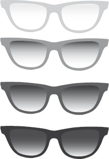
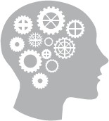
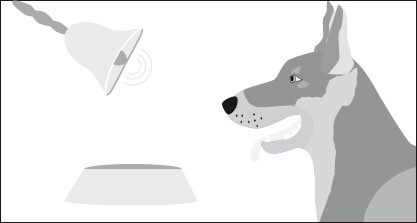
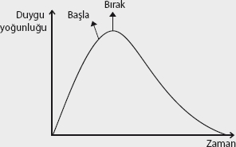
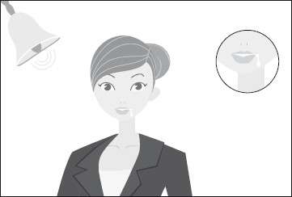
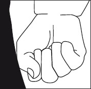

. (Bu arada, vücudumuzun yaşadıklarımıza neden ve nasıl tepki verdiğini sağlık bölümünde detaylı olarak inceleyeceğiz.)
. (Bu arada, vücudumuzun yaşadıklarımıza neden ve nasıl tepki verdiğini sağlık bölümünde detaylı olarak inceleyeceğiz.)Beynimizi kontrol edemememizin
en büyük nedeni aslında, ironik bir şekilde
belki de hayatımızı kolaylaştırıyor...
Nasıl mı?
Otomatik pilota geçerek...
Alışkanlıklarımız
Otobanda 120 km hızla araba kullanırken, aslında arabayı sanki sizin değil de bir başkasının kullandığı hissine kapıldınız mı hiç? Araba kullandığınızın farkında olmadan saatlerin geçtiği sizi şaşırttı mı?
Belki bir düşünceye daldınız ya da muhabbet o kadar koyuydu ki, araba saatlerdir kendi kendine yürüdü gitti. Belki arada vites değiştirdiniz, frene, gaza bastınız ama bunların hiçbirini bilinçli olarak yapmadınız...
Bu, beyninizin hayatı sizin için nasıl otomatikleştirdiğinin bir örneği...
Sadece araba kullanmak değil konuşmak, yazmak, okumak, klavye kullanmak, PlayStation oynamak, müzik aleti çalmak ve bunun gibi birçok becerinizi ilk öğrenirken ne kadar uğraştığınızı hatırlıyor musunuz?
Ve şu an bazı şeyleri ne kadar otomatik şekilde gerçekleştirdiğinizin farkında mısınız?
Beynimiz çok kullandığı kalıpları otomatikleştirerek bunları bilinçaltına atıyor. Bilinçaltının kapasitesi zaten bu becerileri otomatik olarak gerçekleştirmek için yeterince büyük. Böylece bu becerileri çok daha otomatik ve çok daha hızlı şekilde kullanabiliyor, bilincimizi “meşgul” etmeyerek onu yeni ve farklı konular için “hazır tutmuş” oluyoruz.
Son 20 yılda yapılan araştırmalarda, bir alışkanlığın gelişmesi için yaklaşık 3 haftalık bir sürecin gerektiği saptanmış. Sık tekrarla öğrendiğimiz her yeni beceri, davranış biçimi ortalama 3 hafta içerisinde alışkanlığa dönüşüyor.
Otomatikleştirme sürecini 4 aşamada inceleyebiliriz. Mesela, araba kullanma örneğinden gidelim:
ÖRNEK
| 1. Bilinçsiz yetersiz | Otomobilleri ve insanların bunları kullandığını görürsün. Belki de kullanmak kolay gelir. Zaten tek yapman gereken pedallara basıp direksiyonu çevirmektir. |
| 2. Bilinçli yetersiz | Sürücü koltuğuna oturur denersin, her seferinde otomobil istop eder, böylece yetersiz olduğuna kanaat getirirsin. |
| 3. Bilinçli yeterli | Çalışır öğrenmeye başlarsın. Tüm farkındalığınla, arabayı doğru kullanıp, doğru yerde vites atmaya başlarsın. |
| 4. Bilinçsiz yeterli | Birkaç hafta kullandıktan sonra, otobanda sol şeritte gittiğin ve muhabbete daldığın bir an, saatlerdir araba kullanmakta olduğunu fark edersin. |
Hayat algımız otomatik
Belli bir yaşa gelmiş birçok insanın yaşadığı ortak tecrübe olduğu için araba kullanma örneğini vermek istedim.
Bahsettiğim süreç, öğrenme süreci, hayatımız boyunca aslında yüz binlerce kez tekrarlanmış ve de (bebekliğimiz kadar yoğun olmasa da) tekrarlanmaya devam ediyor.
En son ne zaman yeni doğmuş bir bebekle vakit geçirme fırsatınız oldu? Bu zamanı geçirirken “Acaba bu bebek şu an aklından ne geçiriyor?” diye düşündünüz mü?
Bebeğin aklından geçenlerin çok da karışık olmayan düşünceler ve içgüdüsel ihtiyaçlar olduğunu söylemekte yarar var.
Dünyaya çok hızlı adapte olsak da, aslında dünyaya bir o kadar da “boş” geliyoruz. Ne yerçekiminden, ne cisimlerden, ne de insanlardan haberimiz var. Bir bebek olarak bizi yönlendiren sadece yaşamsal içgüdülerimiz.
Ve sonrasında tekrar eden “kalıplar” bizi koşullamaya başlıyor. Mesela, gördüğümüz her cismi elimize alamayacağımızı, çünkü görüş alanımızdaki tüm nesnelerin burnumuzun dibinde olmadığını tecrübe edip, görüş açısı ve uzaklık-yakınlık anlayışımızı oturtuyoruz.
Evet, belki başta capcanlı renkleri olan, çok istediğimiz bir nesneye dokunamadığımız için başlıyoruz ağlamaya. Ama sonunda bu gerçeği kabul ederek, bilinçaltımıza atıyoruz.
Bize sürekli sevgi ve yiyecek veren annemiz yan odaya gittiği zaman, onun dünyadan yok olduğunu düşünüp yine basıyoruz çığlığı... Ama sonra gelince rahatlıyoruz ve bunu da öğreniyoruz.
Sadece biz değil, bir bütün olarak vücudumuz bile bu ayrılığa tepki veriyor. Derimizi pişikler kaplıyor... Tabii buna da ağlıyoruz. (Bu arada, vücudumuzun yaşadıklarımıza neden ve nasıl tepki verdiğini sağlık bölümünde detaylı olarak inceleyeceğiz.)
Bir bebek olarak tekrar eden tüm sonuçlar bize dünyanın kurallarını öğretiyor. Belli bir süre sonra dünyanın kurallarını artık sorgulamıyoruz.
Hangimiz elimizden önemli bir nesne yere düşerken, “Ya doğru, yerçekimi diye bir şey var, şimdi bu yere düşerse kırılır, ben en iyisi mi bunu havada yakalamaya çalışayım” diye analiz yapıyor?
Artık hiçbirimiz dünyayı algılama kurallarını sorgulamıyoruz. Tabii ki artık tüm bu kurallar ve verdiğimiz tepkiler bilinçaltında...
Bu otomatikleşme süreci bizi bir yandan hızlandırarak hayatta kalma ihtimalimizi yükseltse ya da sürekli tekrar eden durumlarda düşünme gereğini ortadan kaldırarak işimizi kolaylaştırsa da, beraberinde de birçok olumsuz sonucu getiriyor.
Ne yazık ki otomatikleşen sadece iyi tepkiler, özellikler değil!
Hayat algımızda ilk izlenimin önemi
İlk izlenimin ne kadar önemli olduğunu hepimiz biliriz. Genelde çok nadir olarak, insanlar hakkındaki ilk değerlendirmemizi değiştiririz. Bunun nedeni hepimizdeki “istikrarlı” olma ve kendimizle çelişmeme isteğidir. İşte bu nedenle hayattaki ilk izlenimlerimiz, hayatımızı şekillendirmeye, hayat algımızın büyük bölümünü kaplamaya devam ediyor.
Hayatımızın özellikle de ilk yıllarında nasıl bir dünyayla karşılaşırsak dünyayı o şekilde algılıyor ve algılamaya devam ediyoruz. Sadece yaşayarak da değil, çevremizde bizi etkileyen iyi ya da kötü niyetli tüm etkenler nasıl bir dünya algımız olacağını belirliyor. En başta ailemiz, arkadaşlarımız, okulumuz, medya ve daha niceleri...
Kendimiz, diğerleri ve tüm dünya hakkında birçok inanç geliştiriyoruz. Hepimiz hayata farklı renkli gözlüklerden bakmaya başlıyor ve öyle devam ediyoruz. Hayata ilk baştan kara gözlükle bakmaya alıştırılmış biri, hayatı karanlık görmeye devam ediyor.
Peki, ya aydınlık ve rengârenk gözlüklerle bakanlar?

Evet, hayatın ilk yıllarına renkli gözlüklerle giren insanlar tabii ki daha şanslılar. Ancak ne yazık ki, hayatı güzel ve renkli insanlar da dahil olmak üzere hepimiz yaşamımız boyunca kötü olaylar yaşıyoruz. Hayat, hepimizin kötü dönemler yaşamasına olanak tanıyacak kadar uzun.
Sadece yaşamak değil... Başka insanların da ne yaşadığını bizzat kendi gözlerimizle, medyadan, dizilerden, filmlerden görüyoruz.
Hayat devam ettikçe hepimiz aslında
“gereğinden fazla öğreniyoruz”.
Yaşadığımız ya da şahit olduğumuz olaylardan
“gereğinden fazla tecrübe kazanıyoruz”.
En yakın arkadaşlarımızın bile bizi “satabileceğini”, ortak iş yaptığımız kişilerin bize kazık atabileceğini, güvenip kalbimizi açtığımız hayatımızın aşkının arkasına bakmadan çekip gidebileceğini görüyoruz.
Aslında hayatın boyama kitaplarından, finalde iyi insanların sonsuza kadar mutlu bir şekilde yaşadığı masallardan, hep mutlu sonla biten Amerikan filmlerinden ibaret olmadığını öğreniyor ve algımızı buna göre değiştiriyor, kendimize çok daha “korunaklı” bir hayat kuruyoruz.
Yıkmak her zaman yapmaktan çok daha kolaydır. Yılların karizması canlı yayında anlık bir sendelemeyle dağılabilir, yapımı yıllarca süren ikiz kuleler bir saat içinde yerle bir olabilir, 60 yıl nice emekler verilerek yetişen bir devlet adamı tek bir kurşunla saniyeler içerisinde hayatını kaybedebilir, iki kişi arasında yıllar boyu sevgi ve emekle oluşturulan güven tek bir olayla bozulabilir...
Daha şanslı görünen, hayata “renkli” gözlüklerle bakanlar da tek bir olayla dahi bu özelliklerini ne yazık ki kaybedebiliyorlar.
Çoğumuz aslında yaşadığımız kötü olaylarla “gereğinden fazla öğrenip”, daha sonraki hayatımızın neden eskisi kadar mutlu geçmediğini, keyif vermediğini ya da sağlıklı bir şekilde sürmediğini sorgulayıp duruyoruz. Yaşadıklarına rağmen, olumlu bakışını değiştirmeyen, eski hayat keyfini koruyan “şanslı” insanlar ne yazık ki azınlıktalar.
Demek ki tek bir olay bile hayata bakışımızda büyük değişikliklere sebep oluyorsa, bilinçaltımızın bu özelliğine yakından bakmak gerek.
Yani beynimizin başlattığı programlara...
Beynimizin başlattığı programlar
Önceki satırlarda yılların büyük emekleriyle oluşan eserlerin nasıl saniyeler içerisinde yıkılabileceğinden örnekler verdik. Ne yazık ki aynı süreç bizler için de geçerli. Yıllar boyu yarattığımız çok olumlu bir “hayat algısı” tek bir olayla yıkılabiliyor. Evet, her büyük olaydan sonra tüm hayatımız mahvolmuyor belki, ancak çok “travmatik” bir olay hayatımızda büyük değişikliklere sebep olabiliyor.
Büyük bir araba kazası sonrasında artık direksiyon başına geçemez oluyoruz, çok büyük bir “kazık yeme” tecrübesiyle insanlara güvenmemeyi öğreniyoruz, çok acı bir terk edilme süreciyle karşı cinse “öfke duymaya”, çok sevdiğimiz bir yakınımızın kaybıyla kendimizi güvende hissetmemeye başlayabiliyoruz. Aslında çok kötü olayların arkasından ironik bir şekilde “hayat insanlar için” diye bir söz söylenir. Gerçekten de hepimiz hayat boyunca büyük olaylar yaşıyoruz.
Ne yazık ki sonsuza kadar hiç kesintiye uğramamış bir mutluluk sürmek dünyanın en “şanslı” insanı için bile mümkün değil.
Kötü olaylar geçse ve her zaman olduğu gibi
“hayat devam etse de”
beynimizin aşırı korumacı yanı yüzünden
etkilerini bir hayat boyunca yaşıyoruz.
Bu konuyu özellikle, kitabın sonunda bulunan sağlık bölümünde detaylı olarak inceleyeceğiz. Herhangi bir sağlık sorununuz olmasa bile beynimizin ve yaşadığımız olayların vücudumuza etkisini anlamak açısından bu bölümü okumayı asla “ihmal etmemenizi” tavsiye ederim.
Daha sonra detaylı olarak ele alacağımız gibi, beynimiz yaşadığımız çok büyük travmaları gereğinden fazla ciddiye alarak üç farklı boyutta tepki veriyor. Psikoloji, beyin ve organ boyutu. Beynimiz bu üç farklı alanda da eşzamanlı devam eden “biyolojik programlar” başlatıyor. Bizi tamamen ilkel bir şekilde koruma amacı taşıyan bu biyolojik programlar, milyonlarca yıl öncesi için geçerli olsalar da şu an ki hayatlarımız için çok da “manalı” değiller.
Yaşanan kötü olayla ilgili tehlike alarmı beynimizde canlı olarak kaldığı ve biz hep bu olayı tekrar yaşamaktan korktuğumuz sürece (bilinçaltımızın zaman kavramı olmadığını hatırlayalım) bu programların etkilerini yaşamaya devam ediyoruz.
Bu arada yeri gelmişken, Nietzsche’nin “Seni öldürmeyen şey güçlü kılar” sözünün aslında söylenişi çok “şık” olsa da, geçerliliğinin pek de fazla olmadığını belirtmek gerek. Bu konunun şimdilik detaylarına girmeden, çok büyük travmatik olayların çok büyük olumsuz duygular yarattığını, bunların da hayatımızda kalıcı ve derin izler bırakabildiğini hatırlatalım.
Bir kişisel gelişim kitabından beklenmeyecek ölçüde olumsuzluklara odaklandığım düşünülmesin! İşte iyi haber: Bu kitabın en güçlü yanı da zaten işte bu tarz travmaların beyindeki etkisini çok kısa sürelerde temizlemek ve hayatınızdaki en önemli değişimleri gerçekleştirmek için size yol göstermek olması. İlerleyen sayfalarda, yaşadığınız şiddetli, kötü olayların yarattığı programları birer birer kapatacağız!

Aslında, beynimizde arkada çalışan ve gerektiği zaman ön plana çıkan binlerce program var. Kitabımızın başında kedi fobisi olan ve kedi gördüğü için masanın üstüne çıkan insanlardan bahsettik. Bu insanlar, bu davranışı “nasıl bir mantık içerisinde” gerçekleştiriyor?
Tabii ki ortada hiçbir mantıklı değerlendirme yok. Kişi bu tepkiyi otomatik olarak veriyor. Arka planda çalışan ve bizi “tehlikeli kedilerden” korumaya çalışan program, uygun ortamda aktiflenerek böyle bir davranış gerçekleştiriyor.
Siz hiç kendine inanılmaz güvenen, bire bir iletişimi muhteşem bir “ağır abinin” topluluk karşısına çıktığında sesinin ve ellerinin titrediğine şahit oldunuz mu?
Ben oldum. Bana sıkça gelen ve kolaylıkla çözüm bulduğumuz bir konu. Ama asıl soru şu: Ne oluyor da bire birde “destanlar” yazan bu kişinin, toplulukla karşı karşıya kaldığında eli ayağı birbirine dolanıyor?
Muhtemelen ilkokulda, öğretmenin sorduğu bir soruya yanlış cevap vermesi ve belki sınıftaki tüm çocukların ona gülmesi sonucu yaratılan bir program, benzer bir ortam bulduğu an çalışmaya başlıyor. “Tehlike var kaç oradan!”
Peki, çok ilgisiz fobileri olan insanları duydunuz mu?
Mesela, 90’lı yılların popüler komedi yıldızı Eddie Murphy’den korkan birini?.. Evet, yanlış okumadınız, Eddie Murphy fobisi olan birinden bahsediyorum. Ben gördüm!
Ya da çoğu küçük çocuğun sevgilisi bir palyaço gördüğünde bağırmaya başlayan insanlar olduğunu biliyor muydunuz?
“Nasıl yani?” dediğinizi duyar gibiyim.
Bu soruyu cevaplamak için beynimizin “mantıksız otomatik tepkilerini” inceleyelim.
“Mantıksız” otomatik tepkilerimiz
Psikolojiyle ilgiliyseniz Pavlov’u mutlaka duymuşsunuzdur. Hani şu “köpek, et, zil ve salya” hikâyesini... Bilmeyenler için kısaca üzerinden geçelim.

Rus fizyolog Ivan Pavlov’un yaptığı deney sırasında, köpeğe ilk olarak birkaç kez zil çalınır. Fakat köpek tepki vermez. Sonradan et verilir. Köpeğin doğal bir şekilde salyaları akar. Sonra verilen et ile birlikte zil çalınır. Daha sonra et verilmediği halde zil çalındığında köpeğin salya salgıladığı görülür.
Bir başka deyişle köpek, her zil çalındığında salya salgılamaya şartlanmıştır. Aslında ilk duyduğumuzda çok da anlamlı gelmeyen, bu önemsiz gibi gözüken deney, neden “hissettiğimiz şekilde hissettiğimiz” konusunda bir devrim niteliği taşıyor.
Nasıl mı?
Beynimiz milyonlarca yıldır benzer ama ilgisiz bir şekilde “zil” ve “salyalar” arasında bağlantılar kuruyor. Fobilerimizin, nedenini bilmediğimiz iyi ya da kötü duygularımızın, tercihlerimizin altyapısında bu eşleşmeler yatıyor. Aslında psikolojide “şartlı refleks” olarak bilinen bu tepkilere ben “mantıksız otomatik tepkiler” adını veriyorum. Biraz önce bahsettiğim gibi bir komedi yıldızından ya da bir palyaçodan fobi derecesinde korkma durumunu “mantıksız otomatik tepkiler” üzerinden açıklayabiliriz. Biraz daha detaya inelim...
Beynimizde nedenleri farklı olsa da, aynı anda
ateşlenen nöronlar (beyin hücreleri) arasında
bağlantı kuruluyor.
Hangi nöronların aynı anda tetikleneceği tamamıyla şansa kaldığı için, aslında hangi nöronların birbirine bağlanacağı da kaderin “cilvesine” kalıyor...
Bunu açıklamak için bir örnek vereyim: Eğer bizi köpek kovaladığı için korkumuzun “tavan” yaptığı bir anda, zemin kattaki bir dairenin televizyonunda Eddie Murphy’nin görüntüsüne gözümüz takılırsa, Eddie Murphy fobimize ilk adımımızı atabiliriz.
Aslında beynimiz yine hayatta bırakma içgüdüsüyle böyle bir düzeni uyguluyor. Özellikle duyguların çok yoğunlaştığı (onun hayat tehlikesi olarak algıladığı) anlarda, çevreyi (görüntü, ses, his, tat, koku) çok hızlı bir şekilde kayda alarak, o etkenlerden herhangi biriyle başka bir zaman karşılaştığı zaman önlem almak istiyor.
Şartlandırmaların gücü
Yeri gelmişken, bu şartlanmaların ne zaman çok daha güçlü kurulduğunu irdeleyelim. Güçlü şartlanmalar için üç önemli değişken bulunuyor: Yoğunluk, zamanlama ve tekrar sayısı.

Bunlardan en önemlisi duygunun ne kadar yoğun olduğu. Yaşanan duygu ne kadar yoğunsa, o an ateşlenen ve mantıksız tepkileri yaratan diğer nöronlar arasındaki bağ o kadar güçlü oluyor.
Güçlü bağlantılar kurulması için zamanlamanın tam duygunun yoğun olduğu 2-3 saniye içerisinde yapılması gerekiyor. Duygunun en yoğun olduğu 2-3 saniye boyunca anlık olarak ortaya çıkıp sonra kaybolan etkenler, çok daha güçlü şartlanmalar yaratıyor.
Eğer çok yoğun duygular yaşanmıyorsa, tekrar sayısı önem kazanıyor. Duygunun yaşandığı olay ve “tetikleyicinin” şartlandırılması tekrar edildikçe bağlantının gücü artıyor.
Şartlandırmalar duygularımızı şekillendiriyor
Hayır, sadece olumsuz duygular değil, tüm hayatımız bu şekilde işliyor. Kendimizi çok iyi hissettiğimiz an çevremizdeki her şey, daha sonra bize benzer şekilde iyi hissettiriyor. Sevdiğimiz yiyecekler, giyecekler, yerler, şarkılar... Aslında, iyi zamanlarımızın geçtiği anlarda çevremizdekilere iyi duygular beslerken, özellikle çok kötü anlarımızda yakınımızda olanlardan hiç hazzetmiyoruz.
Ve hayatımızdaki tüm insanlar, objeler ve yerler bir bakıma tetikleyiciler haline geliyorlar.
Genelde ilk izlenimler burada da işliyor. Mesela, çocukluğumuz Hollywood filmlerini seyrederek, Amerika’ya ve “Amerikan Rüyası”na hayranlık duyarak geçtiyse, muhtemelen hayatımızın ilerleyen yıllarında da bu devam ediyor. İngilizce isimler, Amerika şehirleri, Amerikan markaları bize hep iyi duygular hissettiriyor.
Tam tersi bir şekilde, çocukluğumuzu Irak Savaşı ve Bush’u izleyerek geçirdiysek, Amerika hakkındaki şartlanmalarımız çok daha olumsuz oluşuyor.
Hollywood’dan söz etmişken, aslında şartlanmalarımızın da film, moda ve reklam endüstri tarafından bilinçli bir şekilde nasıl kullanıldığından bahsetmekte yarar var.
Reklamlarda çalan ziller
İlk olarak reklamlarda neden hep toplumun “güzel bulduğu” insanların kullanıldığı konusuna bir açıklama getirelim. Nedeni çok basit! Beynimizde reklamı yapılan markanın, güzel insanlarla ilişkilendirilmesi. Aslında hepimiz o markayla o insanların bir ilgisi olmadığını, onların sadece “reklam yıldızları” olduğunu biliyoruz. Ancak, beynimizde “markanın” nöronlarıyla, “reklam yıldızlarının” nöronları aynı anda ateşleniyor.
Zaten marka yaratmak demek, ihtiyaca göre birçok farklı imajı bir torbaya atıp onları karıştırmak demektir. Güzellik, güçlülük, sağlamlık ve daha niceleri...
Bu arada son zamanlarda, markaların artık pek de bilinçli beyni ikna etmeye uğraşmadıklarını, şartlandırmanın temel prensiplerini uyguladıklarını gözlemleyebilirsiniz. Reklamlarda komedi, romantizm ya da cinsellik benzeri duyguları yoğunlaştırdıklarına, duyguların en yoğun olduğu an olan reklam sonunda logolarını gösterdiklerine ve bunu sıkça tekrarlayarak şartlanmayı pekiştirdiklerine şahit olabilirsiniz.
Programlarımızı tetikleyen ziller
Aslında şartlandırmaların mantığını anlamak ve onların etkisinin farkına varmak bizler için çok önemli. Önceki satırlarda beynimizin çok travmatik anlarda başlattığı programlardan bahsettik. Arka planda çalışan bu programlar, olay sırasında olayla ilişkilenmiş “tetikleyiciler” sayesinde ön plana çıkıyor ve önümüze engel koyuyor, bize sıkıntı yaşatıyorlar.
Mesela, topluluğa karşı konuşmada sıkıntı yaşayan “ağır abi”mizi tetikleyen birçok faktör olabilir. Mesela insanların bakışları, koltukların yan yana dizilişi, insanlara sahneden ayakta durarak bakmak... Tetikleyiciler, gerektiğinde bilinçaltımıza yeniden tehlikede olduğumuzu söylemek için varlar ve iş başa düşünce gereğini yapıyorlar.

Aslında bahsettiğim gibi, hepimizin beyninde arka planda çalışan binlerce benzer şartlanma var. Tabii ki her program bizi kedi örneğinde olduğu gibi masanın üzerine çıkartmıyor. Ancak her program bize korku, heyecan, endişe gibi birçok duyguyu “otomatik” olarak hissettiriyor. Biz de bir nevi tüm bu duyguların birleşimini yaşıyoruz. Şartlandırmanın hangisi daha güçlüyse, o anki modumuzu o belirliyor.
Bu arada karşıt duyguları hissettiren, benzer güçteki şartlanmalar aynı anda tetiklendiği zaman etkilerini kaybediyorlar. Tabii ki 100 kuvvetindeki olumsuz bir duygu şartlanması, 1 şiddetindeki olumlu bir şartlandırıcıyla temizlenmiyor. Hatta böyle bir durumda, 1 şiddetindeki olumlu şartlandırıcı, diğerinin gücü karşısında etkisini kaybetmekle kalmayıp negatif hisler çağrıştıracak hale geliyor.
Mesela, yıllardır huzur içinde oturduğunuz evinizde çok kötü bir olay yaşarsanız artık evinizin size huzur hissettirme ihtimali azalır. Böyle bir durumda, gerekirse taşınmanın ya da en azından mobilyaların yerini değiştirmenin yararlı olduğu söylenir. Zira yaşandığı yer, olayı bilinçaltımıza sürekli hatırlatan tetikleyicilerle dolu olacaktır. İşte NeuroFormat® sistemiyle biz bu kötü olayları temizleyeceğimiz için yukarıda bahsettiğim taşınma gibi çareler aramaya gerek kalmaz. Ancak, tek bir travmatik olay değil de, çok uzun süreler boyunca, çok kötü olayların yaşandığı, kötü bir dönem geçirdiğiniz evinizden taşınmanızı tüm kalbimle tavsiye ederim...
Zilleri hedeflerimiz için kullanmak
Demek ki reklamcılar yapabiliyorsa, siz de yapabilirsiniz. Mesela, çevrenizdekilerin çok iyi hissettikleri anlarda söyleyeceğiniz bir söz ya da küçük bir dokunuşla onları şartlandırabilirsiniz. Şartlandırmaları güçlü kılmak konusunda söylediklerimiz tabii ki burada da geçerli.
Koşulladığınız kişi kendini mutsuz hissettiğinde, çok kısa bir süre boyunca “zilinizi çalarak” koşulladığınız duyguyu yeniden yaratabilirsiniz.
Bunu en iyi Cem Yılmaz’ın yaptığını düşünüyorum. Çok güldürdüğü bir espri sonrasında, esprinin en can alıcı noktasını benzer ses tonuyla gösteri boyunca tekrarlayarak, aynı neşenin sürekli devam etmesini sağlayabiliyor.
Bu arada, kullanacağınız tetikleyicinin “benzersiz” olması oldukça önemli. Zira başkaları tarafından da kazara, sürekli tekrarlanma olasılığı olan tetikleyiciler, biraz önce bahsettiğimiz nedenlerden dolayı etkilerini kaybederler.
Tetikleyicileri sadece başkalarının üzerinde değil, kendi üzerinizde de deneyebilirsiniz. Mesela, kendinizi çok iyi hissettiğiniz anlarda elinizi yumruk haline getirin ve içinizden “Benden iyisi yok” deyin. Bunu yoğun olumlu duygular yaşarken sürekli tekrar etmeniz etkisini arttıracaktır.
Daha sonra, heyecan ve korku hissettiğiniz, ihtiyacınız olduğu bir anda aynı şeyi yaparak, duygularınızı bir anda değiştirebilirsiniz. Bu uygulamayı kendiniz ve başkası üzerinde nasıl kullanabileceğiniz tamamıyla hayal gücünüze kalmış...

Kelimeler de tetikler
Aslında farkında olmadan sürekli kullandığımız bir tetikleyici grubu var: Kelimeler!
Günlük hayatta kullandığımız kelimeler aslında bizim nasıl hissettiğimizi belirliyor. Mesela, size “Nasılsınız?” diye sorulduğunda “Yuvarlanıp gidiyoruz” cevabıyla “10 numara” cevabı çok farklı duyguları çağrıştırır. Mutlu bir hayat için, özellikle kendi kendimizle ve başkalarıyla nasıl konuştuğumuz çok önemlidir. İyi duyguları abartı ifadeleriyle daha da güçlendirmek, kötüleriyse vasat kelimelerle etkisiz hale getirmek çok yararlı olacaktır.
Bilinçaltımız otomatik pilotta
Son bölümlerde bilinçaltının özelliklerini nasıl kendi yararımıza kullanabileceğimiz konusunda bazı “püf noktalarını” paylaştım sizinle. Ama şimdi yeniden başladığımız yere dönelim.
Önce şu konuda anlaşalım:
Geçmişimizi, yaşadıklarımızı, programlarımızı, koşullanmalarımızı değiştirmediğimiz sürece bilinçaltının etkisindeyiz! Nörolojik olarak hayat algımızı değiştirmeden, oluşan psikolojik ve biyolojik programları kapatmadan, yaşanmış olayları beynimizden silmeden ne yazık ki hayatımızda büyük bir değişiklik yaratamıyoruz.
İşte bu yüzden, kişisel gelişim kitaplarıyla gelebildiğimiz noktalar çok sınırlı kalıyor. Kitapları okurken aklımıza yatan, “Yeter, artık ben de böyle olacağım” motivasyonunu veren, öğrendiğimiz dersleri bir türlü uygulayamıyoruz.
Sonra da zaten denemeyi bırakıyoruz.
Peki, ne zamana kadar?
Aynı şeyleri “farklı cümlelerle” söyleyen bir sonraki kişisel gelişim kitabına kadar...
Önceki bölümlerde irdelediğimiz gibi bilincimizi kontrol edebilirken, bilinçaltımız üzerinde doğrudan bir kontrole sahip değiliz. Aslında beynimizi neden kontrol edemediğimizin cevabı da burada yatıyor.
Bilinçaltımızı kontrol edemediğimiz için
beynimizi kontrol edemiyoruz!
Nihai kararı bizim verdiğimizi sanırken, yaşadıklarımızın tek sorumlusunun biz olduğumuza inanırken aslında onun “otomatik pilotluğunda” hayatımıza devam ediyoruz.